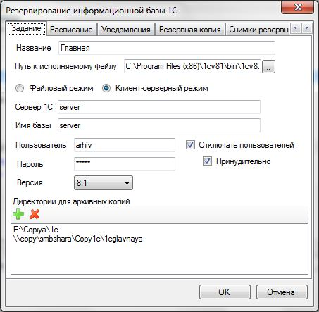

Резервирование информационных баз 1С:Предприятие
Задания данного типа предназначены для создания резервных копий информационных баз 1С:Предприятие средствами самой платформы.
При копировании новой выгрузке дается имя в следующем формате: <Название задания> <Дата> <Время>.dt. Это стандартная выгрузка базы, которая может быть использована для восстановления.
Чтобы создать задание на резервирование каталога необходимо в главном меню программы выбрать Добавить — Резервирование базы 1С. Затем появиться окно, в котором необходимо ввести настройки для задания.

На вкладке Задание задаются следующие настройки:
Название
— наименование задания, используется при именовании созданных
резервных копий.
Путь к исполняемому файлу — путь к
запускному файлу 1С: Предприятие.
Файловый режим —
указывает, что 1С:Предприятие используется в файловом
режиме.
Клиент-серверный режим - указывает, что
1С:Предприятие используется в клиент-серверном режиме.
Каталог
— каталог информационной базы (в файловом режиме).
Сервер
1С — адрес сервера 1С (в клиент-серверном режиме).
Имя
базы — имя информационной базы на сервере (в
клиент-серверном режиме).
Пользователь — имя
пользователя для доступа к базе.
Пароль — пароль для
доступа к базе.
Версия — версия используемой
платформы. Если версия выбрана неправильно, то резервирование может
выполняться некорректно.
Отключать пользователей —
при резервировании базы все активные пользователи будут отключены. В
файловом режиме сначала производиться предупреждение об отключении.
Если пользователь соглашается на отключение, то производиться
резервирование информационной базы, иначе резервирование
прерывается. Если установить переключатель Принудительно, то
через 1 минуту производиться отключение независимо от выбора
пользователя. В клиент-серверном режиме отключение производиться без
предупреждения.
На вкладке Резервная копия задаются следующие настройки:
Хранить копию
(дней) — указывает количество дней, в течении которых
нужно хранить резервную копию. По истечении этого времени копия
удаляется. Значение 0 — неограниченно количество
дней.
Количество копий (шт.) - хранимое количество
резервных копий. Если количество превышает эту величину, то
удаляются самые старые копии. Значение 0 — неограниченное
количество копий.
Занимаемый объем (Мб)
— указывает объем в мегабайтах, занимаемый всеми
резервными копиями данного задания. Если объем превышает
установленное значение, то удаляются самые старые копии. Значение 0
— неограниченный объем.